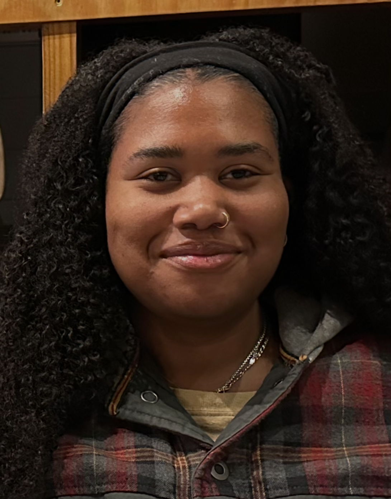

Tiffany M. Johnson

since I was young I have always been fascinated by animals. I have always been interested in the way they think and take care of themselves and their young. I have felt emotionally connected to all the animals I have owned. My dream job was to travel the world helping and taking care of a variety of different animals.